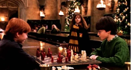

Галерея Гоґвартсу зібрала колекцію чарівних артефактів і портретів відомих магів, що дозволяє відчути дух школи. Відвідувачі можуть побачити сцени з життя учнів та познайомитися з історією засновників, занурюючись у чарівний світ.
Серед експонатів галереї – портрети Альбуса Дамблдора і Севера Снейпа, мантія-невидимка, чарівна паличка Гаррі Поттера та Кубок Трьох Чарівників. Кожен з артефактів відкриває частинку історії, наповненої магією та пригодами.